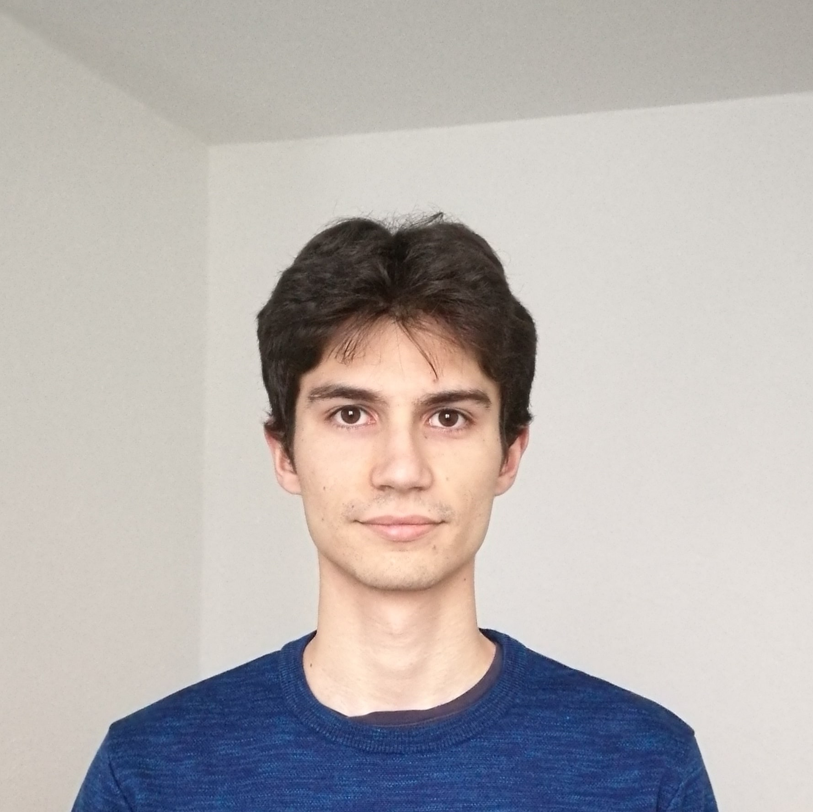

Home

My name is Alexandre Constantin, I received both the Engineering Degree from
ENSEEIHT in Electronics and Signal Processing,
Toulouse INP, France, and the M.Sc. Degree from
National Taiwan University, Graduate Institute of Communication Engineering
(NTU-GICE) in 2018.
From 2018 to 2021, I did my PhD thesis in Applied Mathematics within STATIFY team, within Laboratoire Jean-Kuntzmann and Inria.
My thesis is entitled Time-series analysis of massive satellite images: Application to earth observation, and has been done under the supervision of Stephane Girard and
Mathieu Fauvel.
In 2022, I started a post-doctoral researcher position within the GAIA team in GIPSA-lab with questions on AI dimensionning for time-series applications.
Contact
E-mail: alexandre.constantin@gipsa-lab.grenoble-inp.fr
GIPSA-lab,
11 Rue des Mathématiques,
38400 Saint-Martin d'Hères